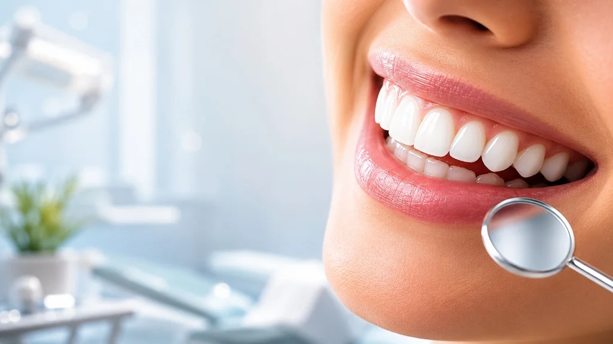

Professional Teeth Whitening in Ahmedabad

Teeth whitening is a safe and effective cosmetic dental treatment designed to remove stains and brighten your smile. Professional teeth whitening can significantly improve the appearance of discolored teeth caused by coffee, tea, tobacco, aging, and certain foods. At Dr. Batra's Dental Hub, we offer professional teeth whitening treatment in Ahmedabad to help you achieve a whiter, brighter, and more confident smile.
What Whitening Can and Cannot Fix
Whitening lifts stains from within enamel. It works well on yellowing from age, tea, coffee, tobacco and general staining. It does not change the colour of crowns, veneers or fillings, and it will not resolve grey discolouration from a dead nerve or from tetracycline staining — those need veneers or internal bleaching instead.
If existing restorations are visible when you smile, whitening the surrounding teeth will make them stand out more. We check for this before starting and will tell you if it applies.
Who Is Suitable
- Healthy teeth and gums — active decay or gum disease must be treated first
- No untreated sensitivity
- Realistic expectations — results vary with your natural enamel
- Not recommended during pregnancy or breastfeeding
- Generally not carried out on under-18s
Before You Whiten
A professional cleaning beforehand makes a real difference. Whitening gel works on enamel, not on plaque and tartar — removing surface deposits first gives a more even, more predictable result. Many patients are surprised how much brighter their teeth look after scaling alone.
Sensitivity
Temporary sensitivity to cold is the most common side effect and typically settles within a day or two. It happens because the whitening gel opens the microscopic tubules in dentine. Tell us if you already have sensitive teeth — we can adjust the protocol and use desensitising agents.

Making It Last
- The first 48 hours matter most — avoid tea, coffee, red wine, turmeric-heavy foods and tobacco
- Use a straw for staining drinks afterwards
- Keep to six-monthly check-ups and cleanings
- Results typically last many months to a couple of years depending on diet and habits
- Smoking will undo the result faster than anything else
What Affects the Cost
Cost depends on whether you have in-office whitening, a take-home system, or a combination, and on whether a cleaning is needed first. You will be told the cost before treatment begins.
Whitening in South Bopal & Ahmedabad
Whitening is usually a single appointment, which suits patients travelling in from across Ahmedabad. We are on the ground floor at B-17/C, Sun South Street, behind Safal Parisar-1, South Bopal — minutes from Bopal, Shela, Ghuma, Shilaj and Ambli.
If you are whitening for a specific occasion, allow a couple of weeks beforehand so any cleaning can be done first and sensitivity has time to settle. Book a consultation or explore a full smile makeover.